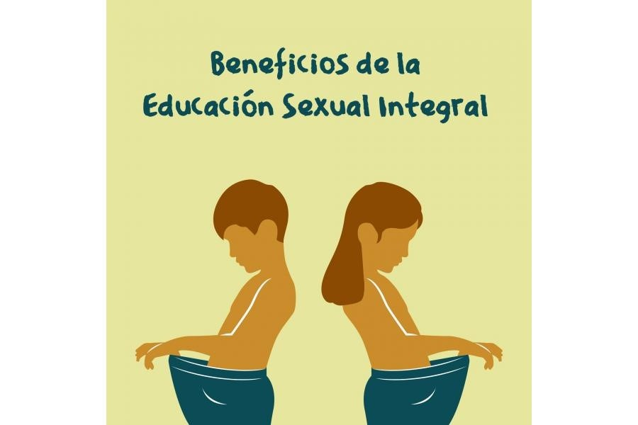

Beneficios de la educacion Sexual:

Un reporte de la Organización de Naciones Unidas (ONU) encontró que la educación sexual integral permite que los jóvenes "exploren sus actitudes y valores, y practiquen la toma de decisiones y otras habilidades de la vida para hacer elecciones informadas sobre sus vidas sexuales".
El acceso a la educación sexual integral forma parte de los derechos sexuales y reproductivos, reconocidos a nivel internacional y tiene además múltiples beneficios. A continuación señalamos algunos de ellos: 1.- Permite tomar decisiones informadas y por lo tanto más responsables. Acceder a educación sexual integral basada en el conocimiento científico permite a las personas tomar decisiones más responsables sobre su sexualidad y sus relaciones. Este es un factor determinante para la vida de muchos y muchas jóvenes. México ocupa el primer lugar en embarazo adolescente de la OCDE. Esta realidad tiene graves repercusiones sociales, económicas y vitales para miles de jóvenes que deben asumir unas responsabilidades para las que no están preparados lo que provoca abandono escolar temprano, precariedad, falta de perspectivas de vida, etc. Para combatir esta realidad el acceso a una educación sexual integral desde la escuela es un elemento fundamental en la estrategia para erradicar el embarazo adolescente. 2.- Relaciones más respetuosas y tolerantes. Conocer la diversidad sexual humana, de cuerpos y mentes, así como la diversidad de afectos hace que las personas tomen conciencia de dicha diversidad y adquieran conductas respetuosas y de reconocimiento a las diferentes formas de ser y relacionarse 3.- Permite desterrar mitos e ideas erróneas que siguen existiendo sobre el sexo y la sexualidad humana. El acceso a una educación sexual basada en la evidencia científica hace que las personas adquieran conocimientos veraces sobre su sexualidad y las relaciones, lo que hará que tomen decisiones más responsables, evitando posibles conductas de riesgo que pongan en peligro su salud sexual y reproductiva. 4.- El acceso a la educación sexual integral retrasa el inicio de las relaciones sexuales. Al contrario de lo que se suele pensar, una educación sexual integral hace que la juventud retrasen sus primeras relaciones sexuales. En diferentes estudios se señala que el acceso a información sobre sexualidad y relaciones en edades tempranas hace que los y las jóvenes tomen decisiones más autónomas y menos influenciadas por la presión de grupo o social. 5.- Ayuda a prevenir relaciones tóxicas y combatir la violencia de género. La educación sexual integral abarca también la forma de relacionarnos. Aprender a cómo deben ser las relaciones para que sean igualitarias y sanas. Ayuda a entender la importancia del consentimiento, del respeto mutuo y la comunicación como elementos indispensables en las relaciones.